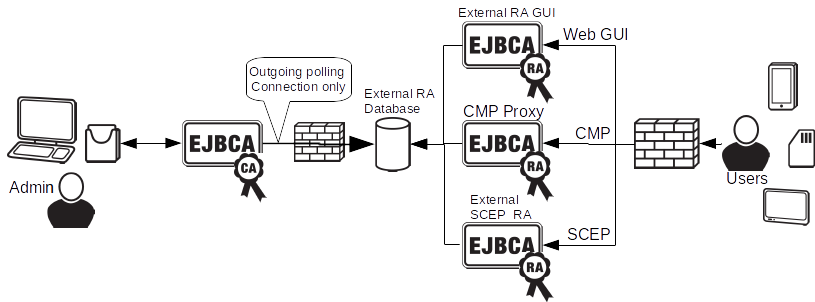
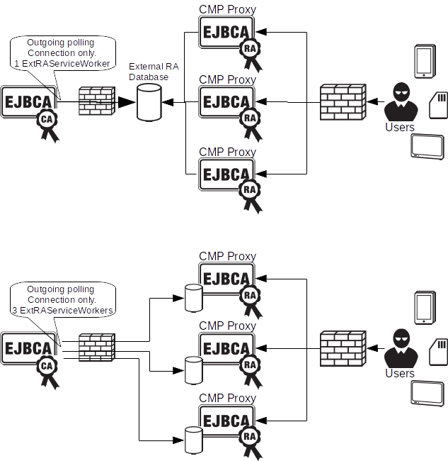

External RA using Database Polling
ENTERPRISE This is an EJBCA Enterprise feature.
This functionality is outdated and will not be supported further in the future. Instead we recommend proxying SCEP requests synchronously through an RA using Peers. For information on the new Peer Connector based External RA, available as of EJBCA 6.6.0, see EJBCA RA.
Introduction
In some cases, for security reasons, is it preferable to deny all inbound traffic to the CA installation and instead let EJBCA periodically fetch and process information from external trusted data sources. For an overview of the solution see the illustration below.
The External Registration Authority (RA) API contains the most basic functions like:
Generate Certificate from PKCS10
Generate PKCS12 for the end user
KeyRecovery of the users key (if requested using PKCS12)
Edit users
Revoke Certificates
Generate a certificate for an existing user using a shared secret
Generate a keystore for an existing user using a shared secret
As of EJBCA 6.3.1, the External RA API is bundled as a part of EJBCA Enterprise Edition and can be enabled in conf/externalra.properties.

External RA Service Workers
External RA Service Workers are configured in the Admin GUI. Each worker will poll a DataSource in the application server. The DataSource should point to a database outside the CA's network security zone. this means pure database connections are used. Depending on your database and configuration these connections can be protected in various ways, for example using SSL.
A message in the database can contain one or more submessages. The messages in the database can be signed and encrypted. Currently only soft PKCS#12 keystores for decryption and signing responses are supported. If a worker find a new requests message it changes the status of the message to 'in process' and extracts all sub-messages.
For each submessage the worker will:
Decrypt the submessage with a keystore (or reject it if encryption is required).
Verify and validate the signature of the submessage (or reject it if signing is required).
Process the request in the submessage with the signers admin privileges (or with full privileges if no signature is present).
Sign the response submessage (if signatures are required by the Service Worker).
Encrypt the response submessage (if encryption is required by the Service Worker).
and finally write all the response submessages as single message with status processed back to the DataSource. Encryption in submessages are done using CMS/PKCS#7 envelopes.
Enabling External RA
To use External RA Service Workers in EJBCA, do the following:
Enable the service in EJBCA_HOME/conf/externalra.properties.
Configure DataSources in EJBCA_HOME/conf/externalra.properties.
If applicable, install the JDBC connector JARs in the application server for databases used in EJBCA_HOME/conf/externalra.properties.
Create datasource(s) matching the configuration in externalra.properties.
Re-build and deploy EJBCA using the command ant clean deployear.
To create a non-jta data source for JBoss 7, a command in jboss-cli.sh can be used, for example:
data-source add --name=ramessage1ds --jta=false --driver-name="org.mariadb.jdbc.Driver" --connection-url="jdbc:mysql://127.0.0.1:3306/messages" --jndi-name="java:/RAMessage1DS" --use-ccm=true --user-name="ejbca" --password="ejbca" --validate-on-match=true --background-validation=false --prepared-statements-cache-size=50 --share-prepared-statements=true --min-pool-size=5 --max-pool-size=150 --pool-prefill=true --transaction-isolation=TRANSACTION_READ_COMMITTED --check-valid-connection-sql="select 1;"Or for PostgreSQL:
data-source add --name=ramessage1ds --jta=false --driver-name="org.postgresql.Driver" --connection-url="jdbc:postgresql://127.0.0.1/messages" --jndi-name="java:/RAMessage1DS" --use-ccm=true --user-name="ejbca" --password="ejbca" --validate-on-match=true --background-validation=false --prepared-statements-cache-size=50 --share-prepared-statements=true --min-pool-size=5 --max-pool-size=150 --pool-prefill=true --transaction-isolation=TRANSACTION_READ_COMMITTED --check-valid-connection-sql="select 1" Note that select 1 must be different for DB2 and Oracle.
Note that select 1 must be different for DB2 and Oracle.
It is recommended to use the following indexes on the external message database:
create index message_idx1 on message (status);create index message_idx2 on message (messageId);Configuring
In the EJBCA Admin GUI, go to Services and create a new Custom Worker that runs at short intervals. The shorter the interval, the more often the worker will poll the DataSource for new messages.
Select Worker: Custom Worker
Custom Worker Class Path: org.ejbca.extra.caservice.ExtRACAServiceWorker
Custom Worker Properties: shown below
Select Interval: Periodical Interval
Period: 10 seconds (or any interval you like but not below 5 seconds)
Select Action: No Action
Active: Checked
The available worker properties are:
externalra-caservice.persistenceunit: A reference to the RA database configured in externalra.properties (Default: RAMessage1DS)
externalra-caservice.encryption.required: Only accept encrypted messages in the RA database (Default: false)
externalra-caservice.signature.required: Only accept signed messages in the RA database (Default: false)
externalra-caservice.keystore.path: Full pathname to the PKCS#12 keystore used to decrypt and sign messages. This file must be available on all EJBCA nodes. Only required if encryption or signing is used. (Default for historic reasons: keystore/extrakeystore.p12)
externalra-caservice.keystore.pwd: Password for the keystore defined by externalra-caservice.keystore.path. (Default: foo123)
externalra-caservice.raissuer: CA Name of the CA issuing RA Certificates, used to check the validity of RA signatures. (Default: ManagementCA)
externalra-caservice.whitelist: A comma separated list of request class-names that this worker will accept. If this is empty or undefined all kinds of request are accepted.
Both the worker's keystore and the one used on the RA server must be issued by 'externalra-caservice.raissuer'. The RA server also needs the certificate of the worker's keystore to be able to encrypt request messages. Signing required Key Usage 'Digital Signature' and encryption requires Key Usage 'Key Encipherment'.
Example:
externalra-caservice.persistenceunit=RAMessage1DSexternalra-caservice.encryption.required=falseexternalra-caservice.signature.required=falseExternal RA API Clients
External RA API clients creates a message from several submessages, where each submessage
Contains a request
Is signed with the RA keystore (optional if not required by Service Worker)
Is encrypted with the Service Worker's keystore certificate (optional if not required by Service Worker)
The message is then written to the database polled by a External RA Service Worker. After a while (depending on how often the Service Worker runs and if the CA is online) the client can fetch the response message.
The client is also responsible for polling the database for responses from the External RA Service Worker.
Running ant externalra-client will build a sample client with all dependencies under EJBCA_HOME/dist/extrernalra-cli. This simple client JAR could be used directly as a library and is a good starting point for client development. See EJBCA_HOME/modules/externalra/src/org/ejbca/extra/ra/ExtRATestClient.java and EJBCA_HOME/modules/externalra/src-test/ for more details on how the use the API.
New submessages require a new org.ejbca.extra.db.MyRequest and org.ejbca.extra.caservice.processor.MyRequestProcessor class where 'My' is your name of choice. Dispatching of messages to a processing class is done using Java reflection to automatically instantiate the correct processor, so it is important that the class names are correct.
For information on External RA clients, see "SCEP RA Server" and "External RA GUI" below.
To generate javadoc for the external RA API you can:
cd modules/externalrajavadoc -classpath ../../lib/hibernate/ejb3-persistence.jar -d javadoc -sourcepath src -subpackages org.ejbcaSecurity
It is strongly recommended to at least use signing of messages sent between RA and CA. If the messages are signed will the RAs certificate be used for authorization internally. This makes it possible to trace which RA that approved the information certified and possible to control which kind of information that the RA can approve, by defining End Entity Profiles. If signing is not used the service run as an 'internal user' where anything goes (Super Administrator).
If message signing is used, the RA servers certificate (used to sign the message) must be an administrator i EJBCA and at least have the following rights:
The RA administrator role
View/Create/Edit/Key Recovery/Revocation Rights
Access to the End Entity Profiles used by the RA
Access to the CAs used by the RA
For signing and encryption the client that uses the API on the RA must support these options. The ScepRA does not support signing and encryption.
For signing is the SHA-256 digest algorithm used and for encryption is AES256 used.
Using the SCEP RA Server
The SCEP RA Server is an External RA API client built from the EJBCA bundle.
The SCEP RA Server supports the SCEP 'polling' RA model. A SCEP client can send a request to the SCEP RA Server, and then wait, polling the RA for updates. When the request is processed by the CA, which fetches the pkcs10 request using the External RA API, the certificate is sent back to the SCEP RA Server. When the certificate reaches the SCEP RA Server, it sends back the SCEP certificate response the next time the SCEP client polls the SCEP RA Server. This feature is very useful to securely insulate the CA from the SCEP clients throughout the network.
Configuring the SCEP RA Server on the External RA Host
The SCEP RA Server is the module installed on the external RA server. This module receives SCEP requests from SCEP clients and uses the External RA API to get the CA to process the SCEP requests.
Setup a message database on the external RA server
Configure the conf/externalra.properties to deploy a new DataSouce for the message database and re-deploy EJBCA
Configure a new worker for this new DataSource (as described in previous sections)
Issue a PKCS#12 keystore for the SCEP RA Server from the SCEP CA and configure it in EJBCA_HOME/conf/scepra.properties. The SCEP CA is this issuer of all SCEP requests.
Create an End Entity Profile and Certificate Profile to issue SCEP requests from and configure it in EJBCA_HOME/conf/scepra.properties.
Configure a CA mapping in EJBCA_HOME/conf/scepra.properties.
Configure the database connection in EJBCA_HOME/conf/scepra.properties
Optional: Configure scep.ra.authPwd in EJBCA_HOME/conf/scepra.properties if you want to authenticate SCEP messages based on a password in the request.
Make sure the correct database JDBC connector JAR is installed in the application server for your database.
Run 'ant externalra-scep-deploy' to deploy the DataSource and SCEP RA Server (or run 'ant externalra-scep' and deploy the war file dist/scepraserver.war yourself).
Accessing the Scep RA Server on the External RA Host
You can access the Scep RA server on the external RA host by pointing your client (vpn router etc) to the URL http://scepraserver.hostname:8080/scepraserver/scep/pkiclient.exe.
Using this URL will include the certificate chain in the SCEP responses. Depending on your client you may instead use the URL http://scepraserver.hostname:8080/scepraserver/scep/noca/pkiclient.exe. Using this URL will return only the client certificate on the SCEP response.
Security Options
Using the External RA, the CA trusts all messages that comes from the RA. This means that if a SCEP client sends a request to the RA, the CA will create the user and issue a certificate as soon as it picks up the message from the RA.
To make a more secure setup, one of the two following ways are recommended:
Each SCEP request can contain a password. Set authPwd in conf/scepra.properties to another value then none. This will require a correct password to be sent in the SCEP request.
Configure Approvals on the CA(s) issuing SCEP certificates.
The two ways can also be combined and both used.
When approvals are activated, a SCEP request will result in an approval request being created in the CA. The approval request will be for adding or editing a user. An administrator can then view the approval request and approve or reject the new request from the SCEP client. The SCEP client will continue to poll the RA until the request is approved, then a certificate is returned, or the request is rejected, then a failure message is returned.
If an approval request is rejected, because the router administrator mistyped something for example, you will have to wait 30 minutes before a new request can be done, because the RA will remember the rejection for 30 minutes.
An approval request will be valid for one hour. After one hour a new request will be created.
The normal workflow using approvals is the following:
A router admin creates a SCEP request to the RA.
The router admin calls up a EJBCA admin and asks to get approval of the request.
The EJBCA admin approves the request and the router gets the certificate, or the EJBCA admin rejects the request and the router gets a failure message.
Using the External RA GUI
The External RA GUI is an External RA API client built from the EJBCA bundle.
The External RA GUI allows browser enrollment, enrollment from certificate signing requests and keystore retrieval without incoming traffic to the CA installation. The functionality of the GUI is similar to the EJBCA Public Web pages.
Configuration on the External RA GUI Host
Create a "messages" database on the External RA GUI host that can be accessed from both the EJBCA installation and locally.
Issue a new JKS keystore with EJBCA to enable SSL (HTTPS) on the External RA GUI host.
Issue a PKCS#12 keystore with EJBCA for signing and encrypting messages to the CA and copy it to the host. Don't forget to add the right administrator privileges to this certificate as described above in 'Security'.
Download the certificate of the CA service's PKCS#12 keystore and copy it to the host.
Download the issuing certificate of the host's PKCS#12 keystore and copy it to the host (should be the same as the issuer for CA service's PKCS#12).
Configure conf/externalra-gui.properties to use the keystores, the certificates, the local database and the local application server.
Make sure a database JDBC connector JAR is installed in the local application server for your database.
Run 'ant externalra-gui-deploy' to deploy the DataSource and External RA GUI application, or...
run 'ant externalra-gui' to build dist/externalra-gui/externalra-gui.war that can be manually deployed to a pre-cconfigured application server.
Start JBoss and verify that the application is available at http://hostname:8080/externalra-gui/
If you need to use https (https://hostname:8442/externalra-gui/) you have to configure your application server manually. You can look at how it is done by EJBCA for example.
Configuration Message Polling from EJBCA
Issue a new PKCS#12 keystore for protection of messages.
Configure the conf/externalra.properties to deploy a new DataSource for the message database and re-deploy EJBCA.
Configure a new worker for this new DataSource and keystore (as described in previous sections). Use white-listing described in the service configuration section to only allow org.ejbca.extra.db.CertificateRequestRequest and org.ejbca.extra.db.KeyStoreRetrievalRequest request messages.
Make sure a database JDBC connector JAR is installed in the local application server for the external RA message database.
Sample service properties:
Select Worker: Custom Worker
Custom Worker Class Path: org.ejbca.extra.caservice.ExtRACAServiceWorker
Custom Worker Properties: (copy below)
Select Interval: Periodical Interval
Period: 5 seconds
Select Action: No Action
Active: Checked
externalra-caservice.whitelist=org.ejbca.extra.db.CertificateRequestRequest,org.ejbca.extra.db.KeyStoreRetrievalRequestexternalra-caservice.keystore.path=/home/ejbca/externalra-caservice.p12externalra-caservice.keystore.pwd=foo123externalra-caservice.raissuer=ManagementCAexternalra-caservice.signature.required=trueexternalra-caservice.encryption.required=falseexternalra-caservice.persistenceunit=RAMessage1DSVerified Platforms and Browsers
The external RA GUI currently supports JBoss and MySQL. Additional databases supported by Hibernate can easily be added.
Known browsers that support key varies over the years, and a list quickly becomes obsolete. Test and report.
CMP Proxy using External RA
The CMP Proxy can use an External RA API back-end.
The CMP Proxy, using External RA back end, will receive CMP messages from clients through HTTP, store them in the External RA database, and wait for a response from the CA to turn up in the External RA database. When the response is received, it will be returned to the client. The client will wait while the External RA polling and processing is taking place, so short polling times should be used (~10 seconds).
Configuring the CMP Proxy on the External RA Host
The CMP Proxy is the module installed on the external RA server.
Unpack an Apache Tomcat server, or a JBoss server.
Setup a message database on the external RA server.
Configure the database datasource in the application server (see below for Tomcat example).
Make sure the correct database JDBC connector JAR is installed in the application server on the external RA server. (i.e. copy mariadb-java-client-1.2.0.jar to apache-tomcat-7.0.67/lib/)
Configure the external RA backend and datasource in EJBCA_HOME/modules/cmpProxy/resources/properties/cmpProxy.properties (if using default datasource name only cmp.backend.protocol needs to be set).
Configure logging level in modules/cmpProxy/resources/properties/log4j.xml.
Run 'ant cmpHttpProxy' to build the CMP Proxy (to dist/cmpHttpProxy) and copy the war file to the deploy directory of the application server.
If you need to trim the configuration of the database connection on the external RA host it is done in modules/cmpProxy/resources/properties/persistence.xml.
To configure a datasource, using a connection pool, in Tomcat you need to edit conf/server.xml>, adding the following Resource to <GlobalNamingResources>:
<Resource name="jdbc/CMPRAMessageDS" auth="Container" type="javax.sql.DataSource" maxActive="100" maxIdle="30" maxWait="10000" username="ejbca" password="ejbca" driverClassName="org.mariadb.jdbc.Driver" url="jdbc:mysql://database-host:3306/messages" />You need to edit username, password and URL.
You also need to make the datasource available to the webapp by editing conf/context.xml, adding a resource link in the end (just before </Context>):
<ResourceLink name="jdbc/CMPRAMessageDS" global="jdbc/CMPRAMessageDS" type="javax.sql.DataSource"/>Configuration Message Polling from EJBCA
On the CA host, configure conf/externalra.properties to enable External RA service and to deploy a new DataSouce for the message database, and re-deploy EJBCA.
Configure a new worker for this new DataSource (as described in previous sections).
Configure CMP aliases, as you would using direct CMP communication.
Make sure a database JDBC connector JAR is installed in the local application server for the external RA message database.
Configure a new worker for this new DataSource.
Optional: If message signing and encryption is required create and configure keystores for this.
Optional: For an extra layer of security, Use white-listing described in the service configuration section to only allow org.ejbca.extra.db.CMPRequest.
Sample service properties:
Select Worker: Custom Worker
Custom Worker Class Path: org.ejbca.extra.caservice.ExtRACAServiceWorker
Custom Worker Properties: (copy below)
Select Interval: Periodical Interval
Period: 5 seconds
Select Action: No Action
Active: Checked
externalra-caservice.whitelist=org.ejbca.extra.db.CMPRequestexternalra-caservice.keystore.path=/home/ejbca/externalra-caservice.p12externalra-caservice.keystore.pwd=foo123externalra-caservice.raissuer=ManagementCAexternalra-caservice.signature.required=trueexternalra-caservice.encryption.required=falseexternalra-caservice.persistenceunit=RAMessage1DSAccessing the CMP Proxy on the External RA Host
You can access the CMP Proxy as described in the CMP Proxy instructions. There is no difference from a client wether using HTTP backend of External RA backend. Example command, using cmpforopenssl (as in CMP examples) but through the proxy:
./cmpclient --server localhost --port 8080 --path cmpProxy-6.4.0/cmpalias --srvcert ManagementCA.cacert.pem --ir --user mykeyid --password password --newclcert clcert.der --newkey privkey.pem --subject "CN=user1,O=My Organization,C=SE"As compared to a session directly to the CA:
./cmpclient --server localhost --port 8080 --path ejbca/publicweb/cmp/cmpalias --srvcert ManagementCA.cacert.pem --ir --user mykeyid --password password --newclcert clcert.der --newkey privkey.pem --subject "CN=user1,O=My Organization,C=SE"Security Options
Using the External RA, the CA works in the same was as if a client connects directly, which means you can use client or RA mode etc. For more information, see CMP. You can use whitelisting and signed external RA messages to further limit capabilities of the external RA host itself.
To sign and encrypt external RA messages, use the following options to configure keystores in cmpProxy.properties:
cmp.backend.keystorepathcmp.backend.keystorepwdcmp.backend.caservicecertpathcmp.backend.issuerchainpathClustering External RAs
You can have several External RA servers, in order to provide high availability, or increased performance. There are generally two waysto cluster External RA:
Setting up a shared, HA, database for the External RA servers.
Setting up independent databases on each External RA server.

External RA service workers on the CA side works cluster-wide on the CA. This means that if you have multipple CA nodes, a single service worker will run on one node by default, but if this node goes down it will run on other nodes. In addition you can pin service workers to specific nodes, so you can have three workers configured, that always run on their respective nodes.